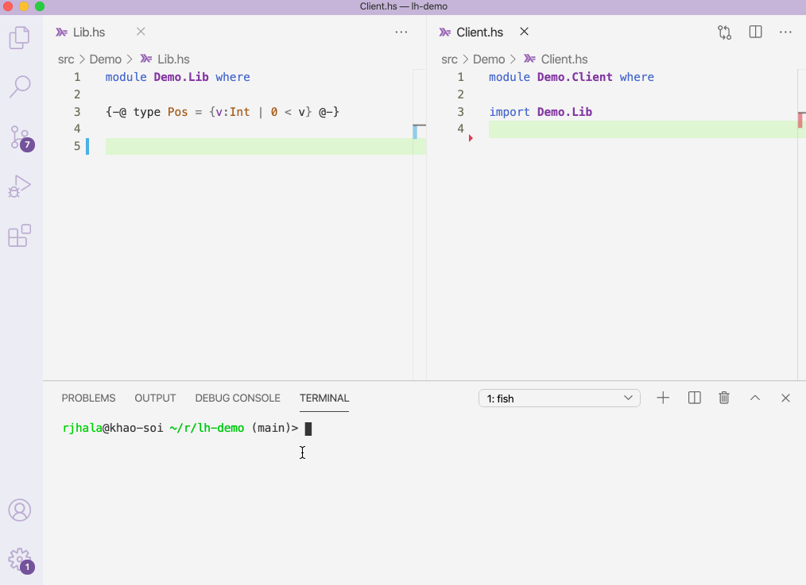
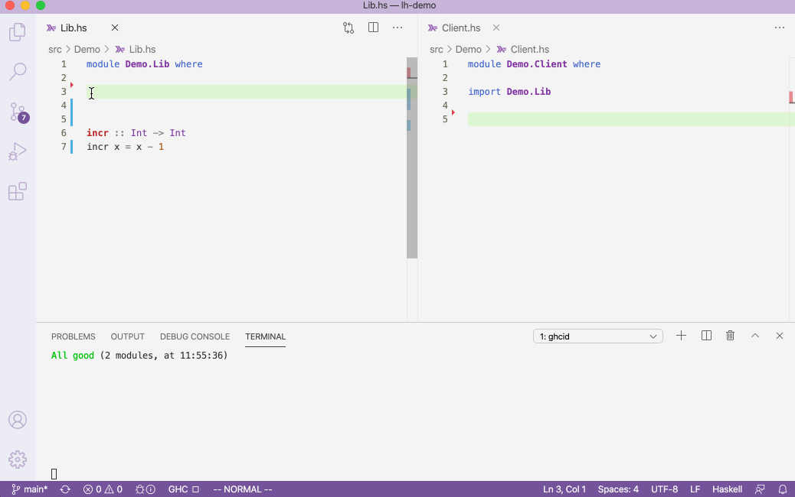
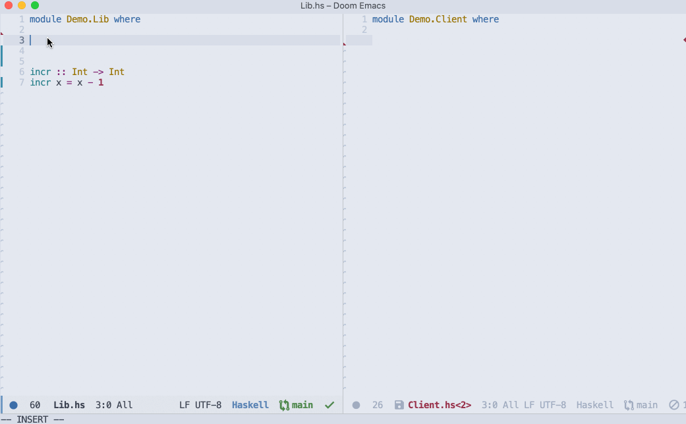
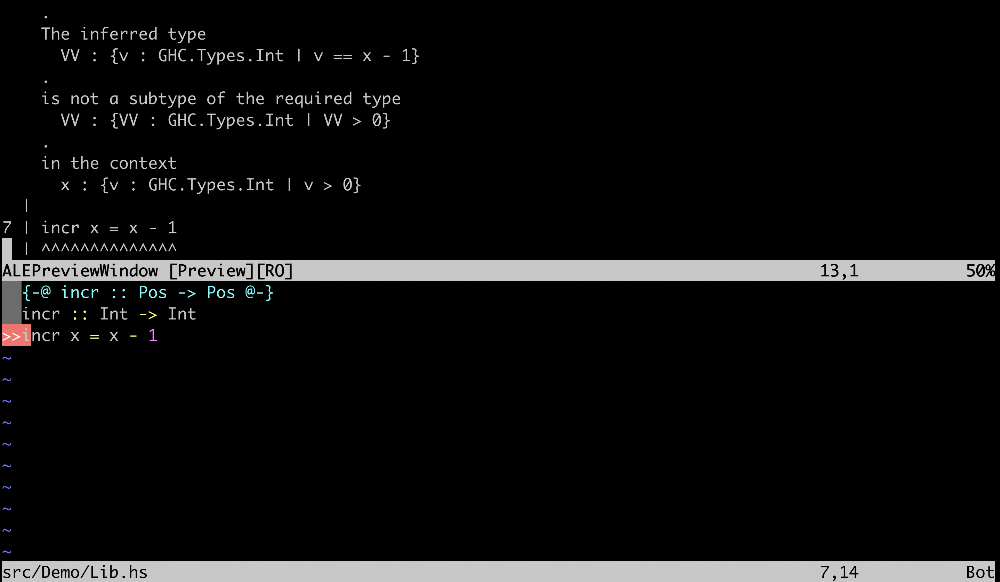

LiquidHaskell is a GHC Plugin
I enjoy working with LH. However, I'd be the very first to confess that it has been incredibly tedious to get to work on existing code bases, for various reasons.
-
LH ran one file at a time; it was a hassle to systematically analyze all the modules in a single package.
-
LH had no notion of packages; it was impossible to import specifications across packages.
-
LH had no integration with the standard compilation cycle; it was difficult to get robust, development-time feedback using
ghcibased tools.
I'm delighted to announce the release of LH version 0.8.10.2.
Thanks to the ingenuity and tireless efforts of our friends Alfredo Di Napoli and Andres Loh at Well-Typed this new version solves all three of the above problems in a single stroke, making it vastly simpler (dare I say, quite straightforward!) to run LH on your Haskell code.
Alfredo and Andres' key insight was that all the above problems could be solved if LH could be re-engineered as a GHC Compiler Plugin using hooks that GHC exposes to integrate external checkers during compilation. I strongly encourage you to check out Alfredo's talk at the Haskell Implementor's Workshop if you want to learn more about the rather non-trivial mechanics of how this plugin was engineered. However, in this post, lets look at how and why to use the plugin, in particular, how the plugin lets us
-
Use GHC's dependency resolution to analyze entire packages with minimal recompilation;
-
Ship refined type specifications for old or new packages, and have them be verified at client code;
-
Use tools like
ghcibased IDE tooling (e.g.ghcidorghcideto get interactive feedback),
all of which ultimately, I hope, make Liquid Haskell easier to use.
1. Analyzing Packages¶
First, lets see a small "demo" of how to use the plugin to compile
a small lh-plugin-demo
package with two modules
module Demo.Lib where
{-@ type Pos = {v:Int | 0 < v} @-}
{-@ incr :: Pos -> Pos @-}
incr :: Int -> Int
incr x = x - 1
which defines a function incr that consumes and returns positive integers, and
module Demo.Client where
import Demo.Lib
bump :: Int -> Int
bump n = incr n
which imports Demo.Lib and uses incr.
Updating .cabal to compile with the LH plugin¶
To "check" this code with LH we need only tell GHC to use it as a plugin, in two steps.
- First, adding a dependency to LH in the
.cabalfile (orpackage.yaml)
build-depends:
liquid-base,
liquidhaskell >= 0.8.10
- Second, tell GHC to use the plugin
ghc-options: -fplugin=LiquidHaskell
That's it. Now, everytime you (re-)build the code, GHC will automatically
run LH on the changed modules! If you use stack you may have to specify
a few more dependencies, as the various packages are not (yet) on stackage,
as shown in the demo stack.yaml.
No extra dependencies are needede if you use cabal-v2. In both cases,
you can use the respective files stack.yaml
and cabal.project
point to specific git snapshots if you want to use the most recent versions.
If you clone the repo and run, e.g. cabal v2-build or stack build you'll get the following result, after the relevant dependencies
are downloaded and built of course...
rjhala@khao-soi ~/r/lh-demo (main)> stack build
lh-plugin-demo> configure (lib)
Configuring lh-plugin-demo-0.1.0.0...
lh-plugin-demo> build (lib)
Preprocessing library for lh-plugin-demo-0.1.0.0..
Building library for lh-plugin-demo-0.1.0.0..
[1 of 2] Compiling Demo.Lib
**** LIQUID: UNSAFE ************************************************************
/Users/rjhala/research/lh-demo/src/Demo/Lib.hs:7:1: error:
Liquid Type Mismatch
.
The inferred type
VV : {v : GHC.Types.Int | v == x - 1}
.
is not a subtype of the required type
VV : {VV : GHC.Types.Int | 0 < VV}
.
in the context
x : {v : GHC.Types.Int | 0 < v}
|
7 | incr x = x - 1
| ^^^^^^^^^^^^^^
oops, of course that (-) should be a (+) if we want the output to also be positive so
lets edit the code to
incr x = x + 1
and now we get
rjhala@khao-soi ~/r/lh-plugin-demo (main)> stack build
lh-plugin-demo> configure (lib)
Configuring lh-plugin-demo-0.1.0.0...
lh-plugin-demo> build (lib)
Preprocessing library for lh-plugin-demo-0.1.0.0..
Building library for lh-plugin-demo-0.1.0.0..
[1 of 2] Compiling Demo.Lib
**** LIQUID: SAFE (2 constraints checked) *****************************
[2 of 2] Compiling Demo.Client
**** LIQUID: UNSAFE ***************************************************
/Users/rjhala/lh-plugin-demo/src/Demo/Client.hs:6:15: error:
Liquid Type Mismatch
.
The inferred type
VV : {v : GHC.Types.Int | v == n}
.
is not a subtype of the required type
VV : {VV : GHC.Types.Int | 0 < VV}
.
in the context
n : GHC.Types.Int
|
6 | bump n = incr n
| ^
That is, during the build, LH complains that incr is being called with a value n
that is not strictly positive as required by incr. To fix the code, we can edit it
in various ways, e.g. to only call incr if n > 0
bump n
| n > 0 = incr n
| otherwise = 0
and now the code builds successfully
rjhala@khao-soi ~/r/lh-plugin-demo (main)> stack build
lh-plugin-demo> configure (lib)
Configuring lh-plugin-demo-0.1.0.0...
lh-plugin-demo> build (lib)
Preprocessing library for lh-plugin-demo-0.1.0.0..
Building library for lh-plugin-demo-0.1.0.0..
[2 of 2] Compiling Demo.Client
**** LIQUID: SAFE (2 constraints checked) ****************************
lh-plugin-demo> copy/register
Installing library in ...
Registering library for lh-plugin-demo-0.1.0.0..
Benefits¶
There are a couple of benefits to note immediately
-
A plain
stack buildorcabal v2-buildtakes care of all the installing and checking! -
No need to separately install LH; its part of the regular build.
-
GHC's recompilation machinery ensures that only the relevant modules are checked, e.g. the second time round, LH did not need to analyze
Lib.hsonlyClient.hs
2. Shipping Specifications with Packages¶
While the above is nice, in principle it could have been done
with some clever makefile trickery (perhaps?). What I'm much
more excited about is that now, for the first time, you can
ship refinement type specifications within plain Haskell packages.
For example, consider a different lh-plugin-demo-client
package that uses incr from lh-plugin-demo:
bump :: Int -> Int
bump n
| n > 0 = incr n
| otherwise = incr (0 - n)
Again, the lh-plugin-demo-client.cabal file need only specify the various
dependencies:
build-depends:
liquid-base,
liquidhaskell,
lh-plugin-demo
````
and that GHC should use the plugin
ghc-options: -fplugin=LiquidHaskell
and lo! a plain `stack build` or `cabal v2-build` takes care of all the rest.
rjhala@khao-soi ~/r/lh-plugin-demo-client (main)> stack build lh-plugin-demo-client> configure (lib) Configuring lh-plugin-demo-client-0.1.0.0...
lh-plugin-demo-client> build (lib) Preprocessing library for lh-plugin-demo-client-0.1.0.0.. Building library for lh-plugin-demo-client-0.1.0.0.. [1 of 1] Compiling Demo.ExternalClient
* LIQUID: UNSAFE *******
/Users/rjhala/lh-plugin-demo-client/src/Demo/ExternalClient.hs:8:22: error: Liquid Type Mismatch . The inferred type VV : {v : GHC.Types.Int | v == 0 - n} . is not a subtype of the required type VV : {VV : GHC.Types.Int | VV > 0} . in the context n : GHC.Types.Int | 8 | | otherwise = incr (0 - n) | ^^^^^^^
(Whoops another off by one error, lets fix it!)
```haskell
bump :: Int -> Int
bump n
| n > 0 = incr n
| otherwise = incr (1 - n)
and now all is well
rjhala@khao-soi ~/r/lh-plugin-demo-client (main)> stack build --fast
lh-plugin-demo-client> configure (lib)
Configuring lh-plugin-demo-client-0.1.0.0...
lh-plugin-demo-client> build (lib)
Preprocessing library for lh-plugin-demo-client-0.1.0.0..
Building library for lh-plugin-demo-client-0.1.0.0..
[1 of 1] Compiling Demo.ExternalClient
**** LIQUID: SAFE (3 constraints checked) *****************************
lh-plugin-demo-client> copy/register
Installing library in ...
Registering library for lh-plugin-demo-client-0.1.0.0..
Prelude Specifications¶
Did you notice the strange liquid-base dependency in the cabal files?
Previously, LH came installed with a "built-in" set of specifications for
various prelude modules. This was hacked inside LH in a rather unfortunate
manner, which made these specifications very difficult to extend.
Moving forward, all the refinement specifications e.g. for GHC.List or Data.Vector
or Data.Set or Data.Bytestring simply live in packages that mirror the original
versions, e.g. liquid-base, liquid-vector, liquid-containers, liquid-bytestring.
Each liquid-X package directly re-exports all the contents of the corresponding X
package, but with any additional refinement type specifications
(Note: After writing this post the mechanism to handle specifications evolved again. See
this other post for the details).
Thus, all the refined types for various prelude operations like (+) or (-) or head
and so on, now ship with liquid-base and we add that dependency instead of base.
Similarly, if you want to verify that your code has no vector-index overflow errors,
you simply build with liquid-vector instead of vector! Of course, in an ideal,
and hopefully not too distant future, we'd directly include the refinement types inside
vector, containers or bytestring respectively.
Benefits¶
So to recap, the plugin offers several nice benefits with respect to shipping specifications
-
Refined signatures are bundled together with packages,
-
Importing packages with refined signatures automatically ensures those signatures are checked on client code,
-
You can (optionally) use refined versions of
preludesignatures, and hence, even write refined versions of your favorite custom preludes.
3. Editor Tooling¶
I saved my favorite part for the end.
What I have enjoyed the most about the plugin is that now (almost) all the GHC-based
tools that I use in my regular Haskell development workflow, automatically incorporate
LH too! For example, reloading a module in ghci automatically re-runs LH on that file.
ghcid¶
This means, that the mega robust, editor-independent ghcid now automatically
produces LH type errors when you save a file. Here's ghcid running in a terminal.

vscode¶
Editor plugins now produce little red squiggles for LH errors too.
Here's code with the Simple GHC (Haskell) Integration plugin

emacs¶
Here's doom-emacs with the dante plugin

vim¶
And here is neovim with ALE and the stack-build linter

Benefits¶
- Some of this was possible before: we had to write special LH modes for different editors -- special thanks to Alan Zimmerman's fantastic haskell-ide-engine!. However, now we can simply work with the increasingly more robust GHCi and Language-Server based tools already available for major editors and IDEs.
4. Caveats¶
Of course, all the above is quite new, and so there are a few things to watch out for.
-
First, for certain kinds of code, LH can take much longer than GHC to check a file. This means, it may actually be too slow to run on every save, and you may want to tweak your
.cabalfile to only run the plugin during particular builds, not on every file update. -
Second, the
liquid-Xmachinery is designed to allow drop in replacements for various base packages; it appears to work well in our testing, but if you try it, do let us know if you hit some odd problems that we may not have anticipated.
Summary¶
Hopefully the above provides an overview of the new plugin mode: how it can be used, and what things it enables. In particular, by virtue of being a GHC plugin, LH can now
-
Run on entire Haskell packages;
-
Export and import specifications across packages;
-
Provide errors via existing GHC/i based editor tooling.
All of which, I hope, makes it a lot easier to run LH on your code.
Our most profound thanks to the National Science Foundation: this work was made possible by the support provided by grant 1917854: "FMitF: Track II: Refinement Types in the Haskell Ecosystem".